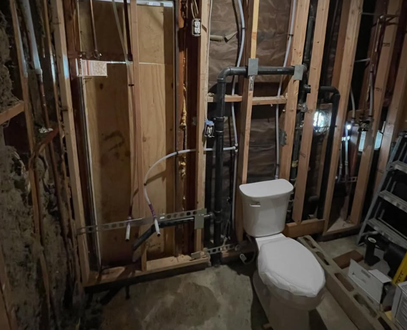
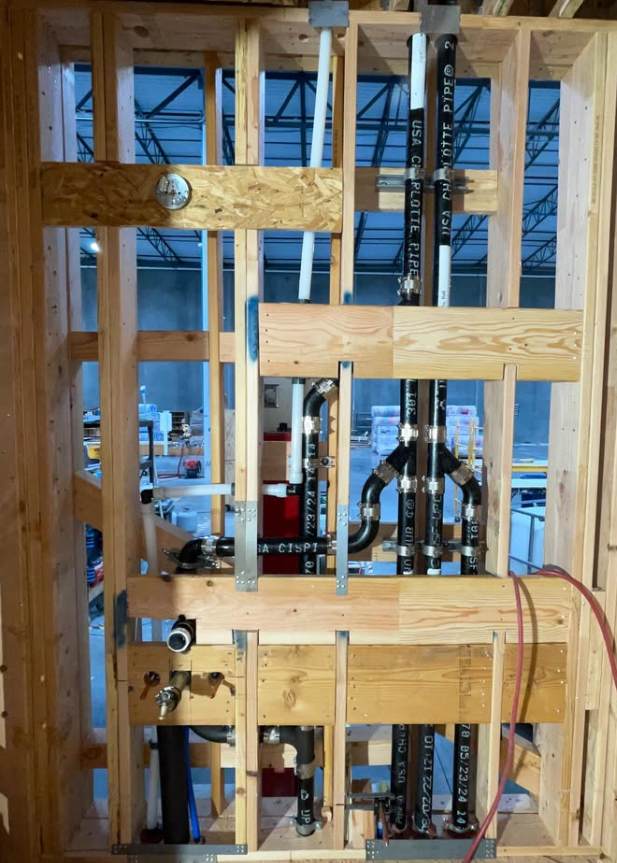
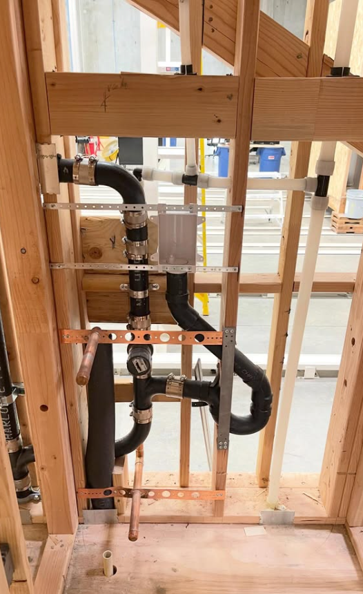

Repairs
Fast, dependable fixes for plumbing problems large and small.
INLAND EMPIRE'S TRUSTED PLUMBER
RESIDENTIAL • COMMERCIAL • ADU • NEW CONSTRUCTION


Fast, dependable fixes for plumbing problems large and small.

Preventive service that helps keep plumbing systems running properly.

Professional rough-in and complete plumbing for new construction.

Water, waste and fixture plumbing for ADUs and additions.
SERVICE AREAS
Reliable, affordable plumbing throughout San Bernardino and Riverside counties and surrounding Inland Empire communities.
OUR WORK
GOLDEN COAST PLUMBING
Reliable, affordable plumbing backed by 8 years of hands-on experience.